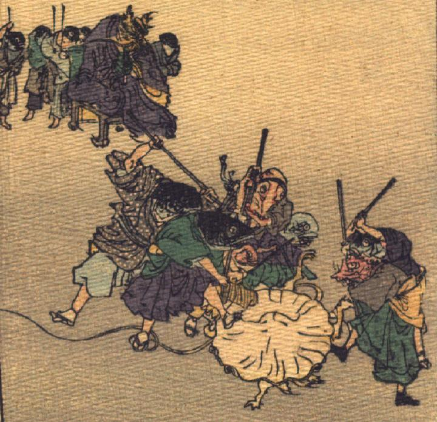

猿を連れてくることに失敗したため、竜王に仕える魚たちに殴られるくらげ。地面に這いつくばったくらげを、魚やタコが棒で殴りつけている。竜王は椅子に座り、背後にお供の魚たちを従えて、その様子を見ている。
著作者：J.Dautremer／出典：親書誌：U426_nichibunken_0107：La meduse simple et naïve／日付：2006／資源識別子：U426_nichibunken_0107_0008_0000
Copyright (c)2010- International Research Center for Japanese Studies, Kyoto, Japan. All rights reserved.